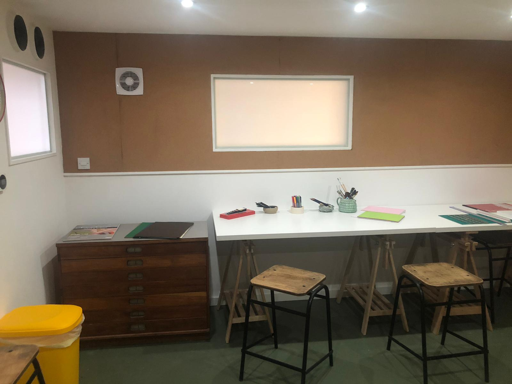

Katy Cotterell
Art Psychotherapist
Sessions last for 50 minutes and occur weekly at an agreed time.
The fee per session is £75 and can be paid by cash or bank transfer in advance or on the day of the appointment. If sessions are cancelled with less than 2 working days notice or you do not attend, you will have to pay the full fee. I do not charge for sessions you cannot attend provided you give me a minimum of 2 working days notice.

My private practice is located in the art room at Caya Therapy in Peckham. Please note if you arrive late you will still need to pay for the whole session and we will also have to finish on time.
I see clients of all genders and sexual orientations and my work at Caya is currently focused on working with Adults.
A note on the importance of endings in therapy:
You can decide to end therapy at any time, however I recommend a few weeks notice period work through the ending as this can often be an important part of the therapeutic process. This can be talked through as part of beginning therapy.
Confidentiality:
Brief notes on the sessions, art work, art work documentation will be stored securely by the therapist, and will not be identified by name. Some general information about the progress of the therapy will be discussed with the therapist’s clinical supervisor, as required by HCPC guidelines. Any artworks made during sessions will be safely stored onsite in a lockable cupboard and made accessible each session for the duration of therapy. At the end of therapy you may chose to keep some of the artworks made in session, which will be thought about as part of the ending process. If you do not wish to keep the artwork yourself I will have to dispose of these as part of keeping to current recommended standards of practice and confidentiality.
I attend regular clinical supervision to ensure safe and ethical practice.
Caya Therapy
Unit 3.14
Print Village
58 Chadwick Road
London
SE15 4PU
katycotterellarttherapy@gmail.com
www.cayatherapy.co.uk